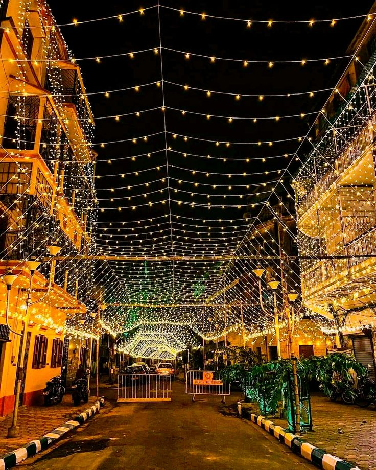
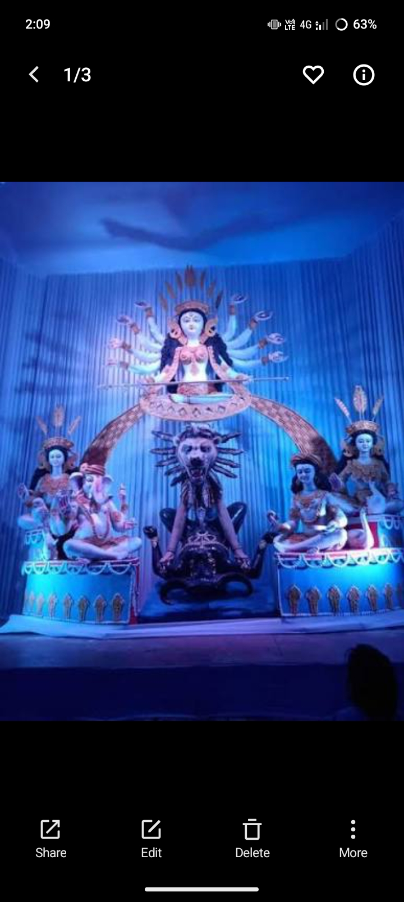
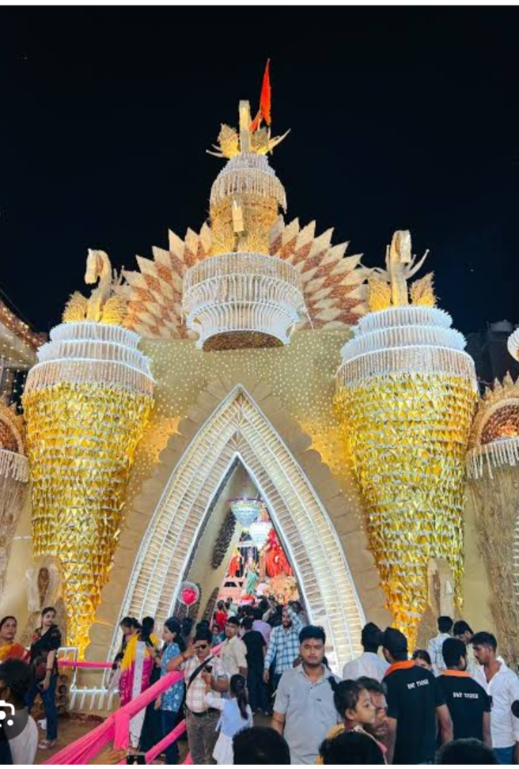

Celebrate the divine blessings of Maa Durga. Experience devotion, beautiful decorations, traditional puja and the joyful spirit of Durga Puja in Bihar Sharif.
Explore Pandal 📍 Find LocationMohaddinagar is a locality in Bihar Sharif, Bihar. During Durga Puja, devotees celebrate the worship of Maa Durga with faith, devotion and festive enthusiasm.
A Durga Puja pandal is a temporary decorated place where devotees gather to seek the blessings of Maa Durga. Decorations, the idol, devotional songs and aarti can make the celebration a memorable experience.
Important: The exact theme, decoration, programme timings and arrangements of the Mohaddinagar pandal for 2026 should be confirmed locally with the puja committee.
Learn about the main traditions associated with Durga Puja.
Devotees offer prayers to Maa Durga and seek blessings for peace, happiness and prosperity.
Devotional aarti is performed as an expression of faith and reverence for the Goddess.
Flowers, lights and decorative elements are commonly used to create a festive atmosphere.
Families and devotees come together to celebrate the festival and participate in religious events.
Explore Durga Puja decoration and festival visuals. Tap a photo to view it larger.

🌺 Festival Decoration

✨ Colourful Celebration

🪔 Festive Lights
Note: These are illustrative festival images, not verified photographs of the actual Mohaddinagar pandal. Replace them with real local pandal photographs when available.
Listen to a devotional aarti while exploring the website.
May Maa Durga bless everyone with courage, happiness, peace and prosperity.
You can play a Durga Aarti recording using the button below.
▶ Listen to Durga AartiAarti timings at the actual pandal have not been verified. Please confirm them with the local puja committee.
Find Mohaddinagar in Bihar Sharif using Google Maps.
Use the map to search for the Mohaddinagar Durga Puja pandal and check the route from your current location.
🗺️ Open Google MapsThe map shows the locality search area; it may not mark the exact temporary pandal entrance.